CUBE: BOARDS
Live financial reporting, built into Cube.
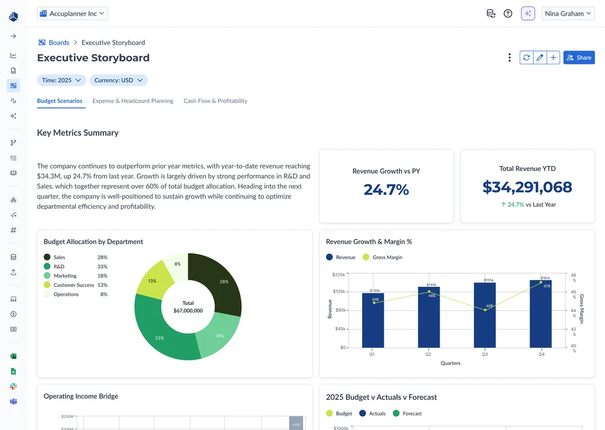
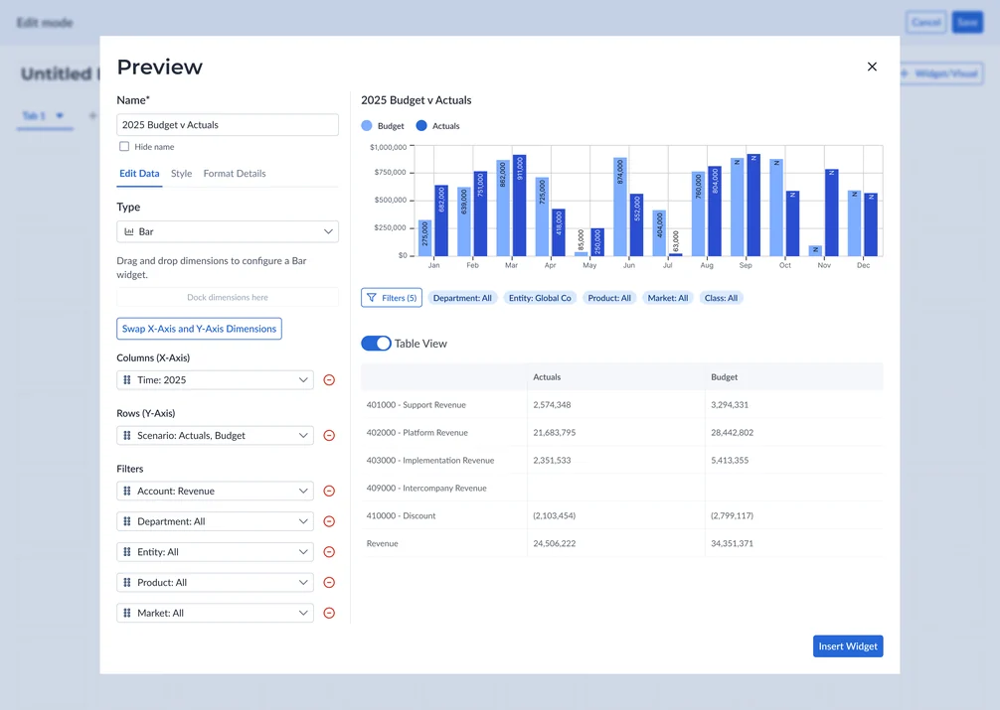
SUMMARY
Cube is an FP&A platform for finance teams. Its dashboarding experience, powered by a third-party BI tool, "didn't feel like Cube": reports were confusing to build, data went stale between refreshes, and even basic charts often needed hands-on support. I led product design for Boards, bringing reporting into Cube so teams could build interactive reports on live data and share them with budget owners and executives.
As the sole product designer, I partnered with Product and Engineering across multiple releases. My work spanned relative-time shortcuts, widget building and editing, stakeholder sharing, and an AI flow that turns a plain-English prompt into a chart, balancing familiar finance workflows with what engineering could ship.
Boards replaced the third-party reporting tool with a native workspace connected to Cube's financial data.
75%
adoption across 500 customers within 3 months
98%
CSAT across the 500 customers
The problem
Cube’s reporting experience relied on a third-party BI tool that customers said “didn’t feel like Cube.” Building reports was confusing, and keeping them current meant manual exports or scheduled refreshes.
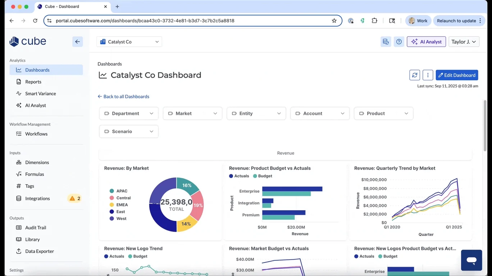
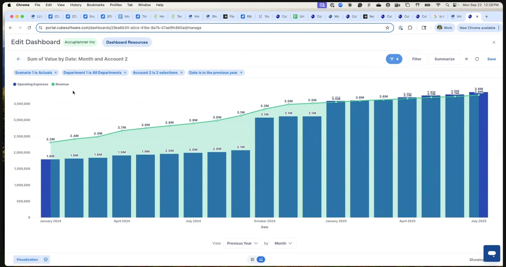
My job was to design something finance could actually build and report in, while making its hardest interactions usable and buildable.
Two use cases drove most decisions: recurring budget vs actuals reviews and YTD reporting. Both followed the same shape: build once, reuse every period, and share with someone outside finance.
1. Recurring Budget v Actuals
- Finance
- Budget Owners
Finance builds a board, shares it with stakeholders, and has recurring monthly results reviews.
2. YTD Reporting
- Finance
- C-Suite
- Investors
Finance builds a board and gives leadership and investors access to track progress at any time.
Solving time shortcuts
Finance teams needed familiar shortcuts like “year to date” and “last three months.” The early design used explicit dates, which meant users had to update filters for each reporting period.
Relative dates were already on the roadmap, but customer feedback calls reinforced the need to ship this earlier.
The tricky part was making shortcuts work across rows, columns, and filters. I explored several versions with the PM and front-end engineering, working through menu structure, selection behavior, and feasibility:
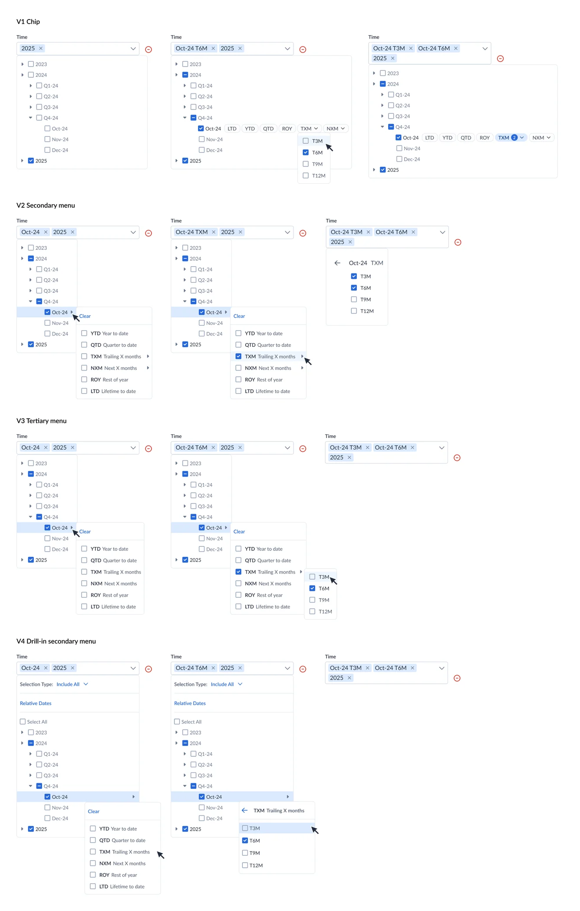
We considered letting users enter any number of months, but that increased scope. The PM and I decided on presets of 3, 6, 9, and 12 months for the first release. I designed the shortcut menu around those choices, with the selection(s) shown in the field.
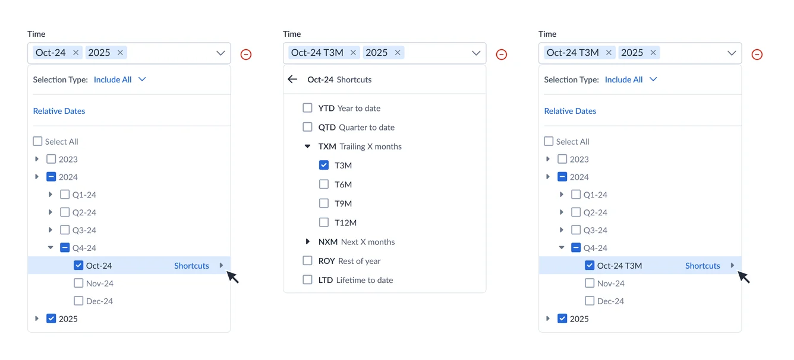
Designing the builder
Boards had to feel like the spreadsheet tools finance already trusts, and be practical for engineering to ship. These were the calls that got us there:
1. Building a widget
I reused Cube’s spreadsheet range builder so configuring Columns, Rows, and Filters to build widgets felt familiar.
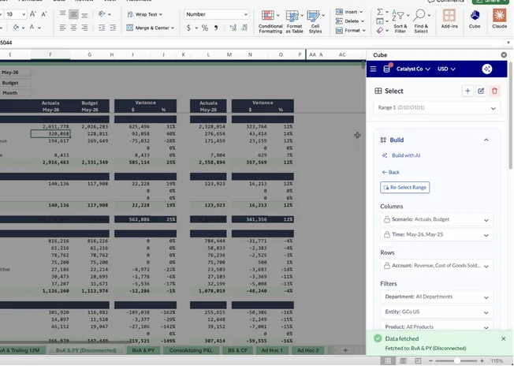
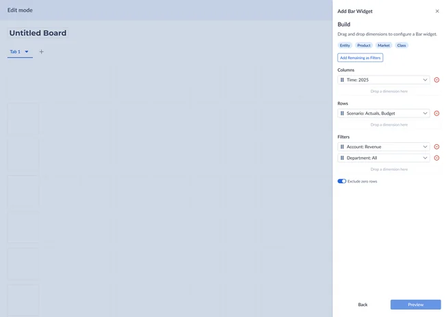
2. Split preview modal
Editing, styling, and formatting sat beside a live preview, with a Table View toggle to sanity-check the chart as a pivot table, the format they’re familiar with and trust most.
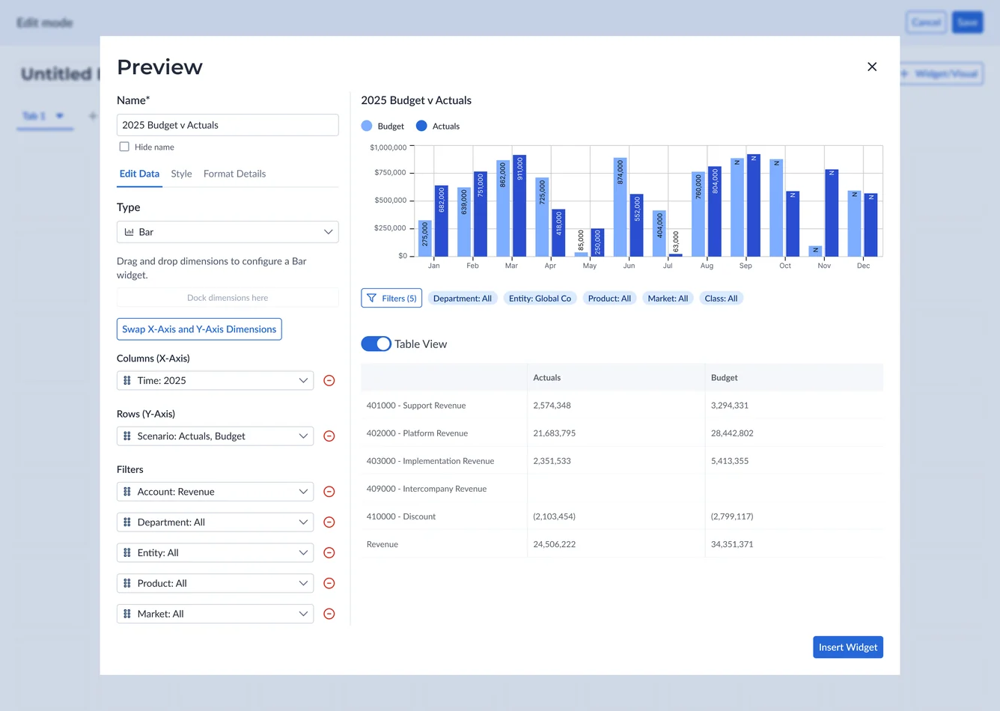
3. Text widget editing: right drawer → inline toolbar
Some familiar patterns needed rethinking. My first text widget design used a right drawer, until Engineering and I realized it could cover the very widget being edited. I proposed a toolbar above the board instead.
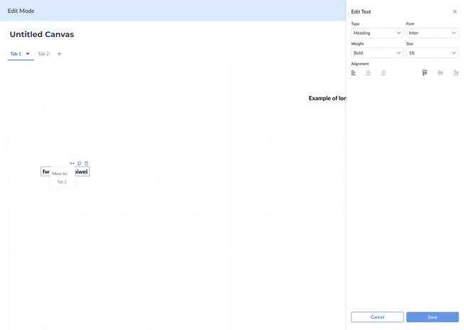
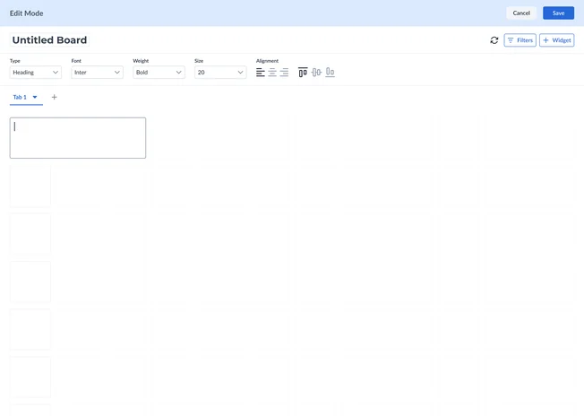
4. Widget interaction: hover → click
I also changed widget actions from hover to click after front-end engineers flagged the hover behavior as finicky. The goal stayed the same; the interaction became more practical to build.
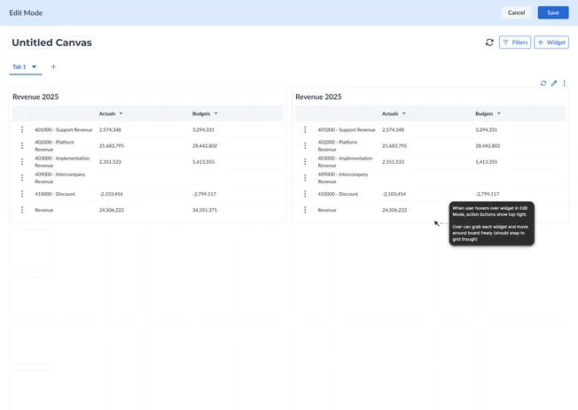
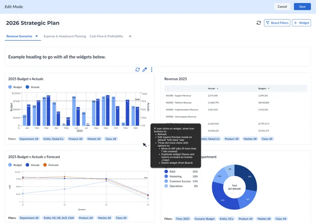
Building with AI
To make widget-building faster, I designed Build with AI. Users describe a chart in plain English (“revenue by quarter for each entity, in millions”) and the Visualization Agent generates a fully editable widget.
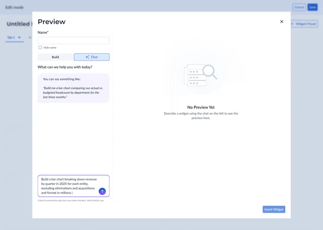
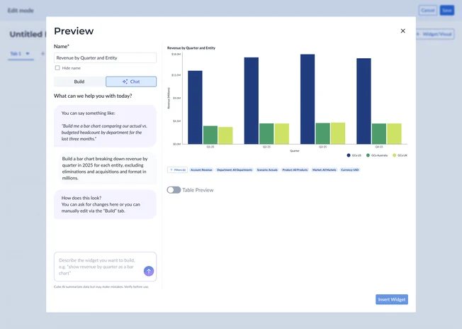
Rather than invent a new AI pattern, I adapted Cube’s existing AI Analyst chat into a Chat/Build split: refine the widget with follow-up prompts in Chat, or switch to the manual editor for precise control in Build. Both edit the same widget, so AI speeds people up without locking them out of the details.
I later designed Cube Decks, carrying this AI build flow and Board widgets into PowerPoint and Google Slides as live, refreshable visuals.
Bringing sharing back into focus
I’d focused so much on the building experience that View Mode emphasized adding widgets. But the workflow doesn’t end when finance finishes building a board.
The next step is sharing it with someone who needs to see the numbers: like a marketing lead filtering a budget vs actuals board to their department during a monthly review.
I reorganized its actions to make Share primary, matching the recurring reporting workflow and shifting View Mode’s emphasis from building the report to getting it into stakeholders’ hands.
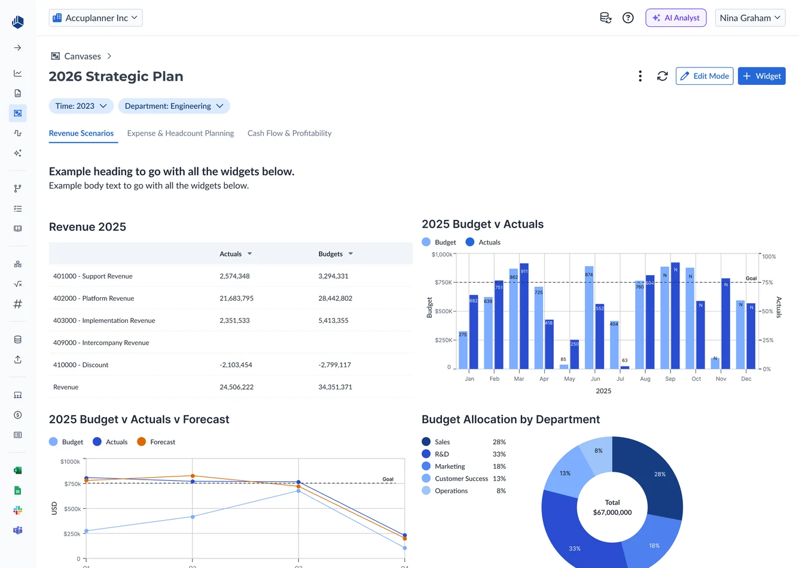
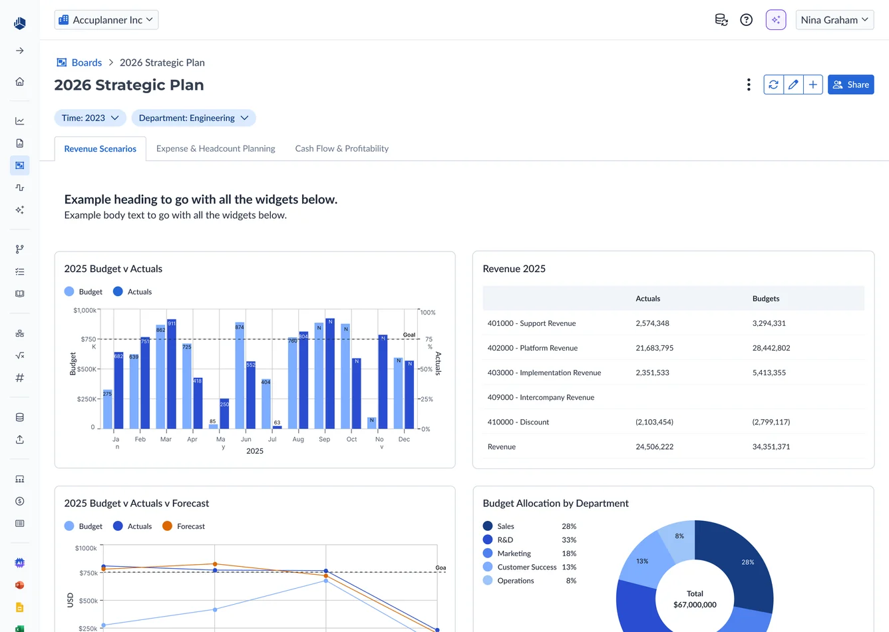
The details underneath
Beyond the big flows, a few smaller decisions did a lot to make Boards feel like the spreadsheets finance already works in, and set up patterns we could reuse later.
1. Calculated columns
Calculated columns needed more room than an in-cell interaction allowed, so I moved formula entry above the table, familiar to any spreadsheet user and a foundation we could scale (with suggested-formula logic and dimension chips later). I also designed a confirmation for instances when deleting a column would delete a dependent calculation.
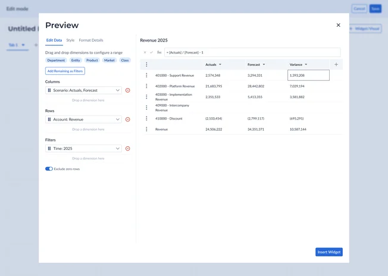
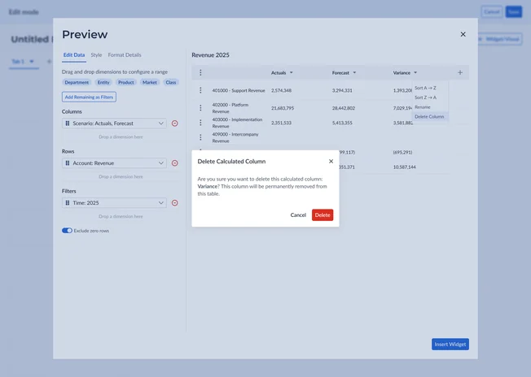
2. Formatting
For formatting, expandable cards let users format and reorder individual data points. “Use same format for all” applied shared formatting while keeping individual colors and ordering available. The chart icons and color-theme drawer were later reused in Decks.
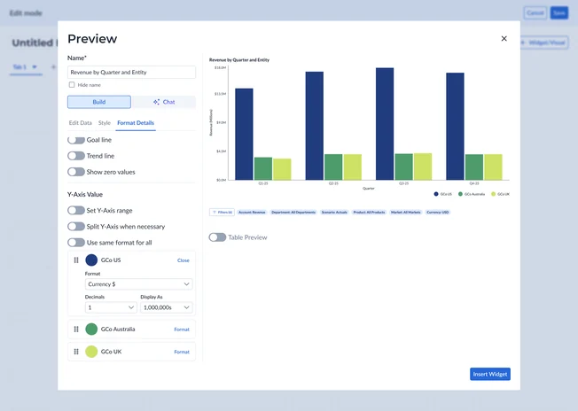
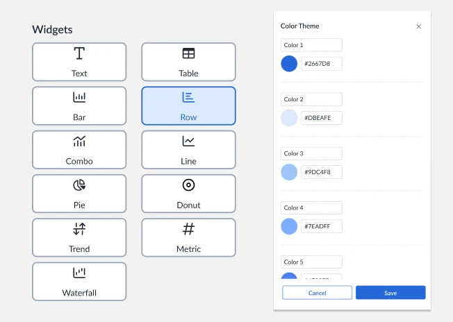
What shipped
Feedback and impact
Boards became a native, trusted way to report
Shayan, Head of Product, and I walked four customers through chart building, styling, formatting, filters, and relative dates. Their feedback reinforced the value of connected data and reusable reporting.
Boards shipped through multiple releases, replacing the previous third-party reporting workflow with 75% adoption within three months and a 98% CSAT score.
75%
adoption across 500 customers within 3 months
98%
CSAT across the 500 customers
What I’d do differently
I’d build more customer check-ins into each release and stay closer to Product on how those releases were landing.
Leading Boards sharpened how I explore options, spot the real constraint, and bring Product and Engineering into decisions earlier, so we can weigh the tradeoffs and keep moving quickly.
Enter password
The rest of this case study is confidential.